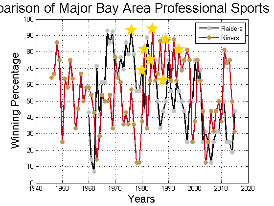
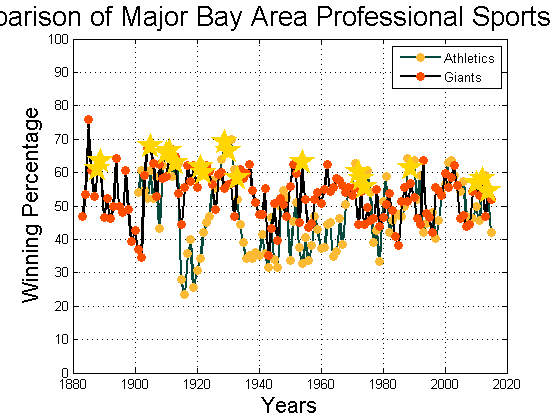
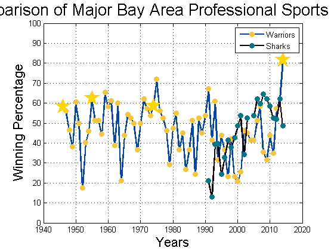
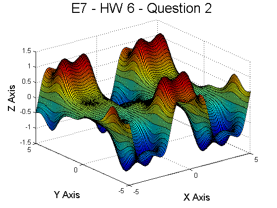
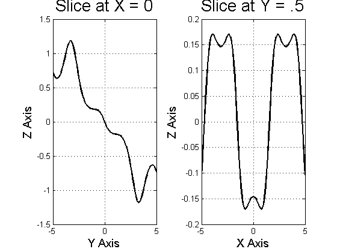
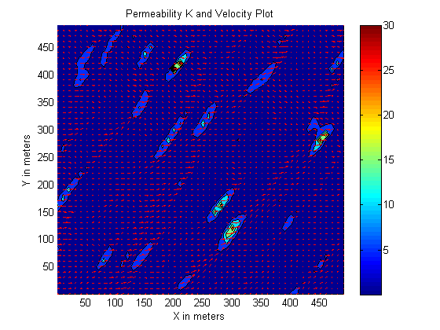
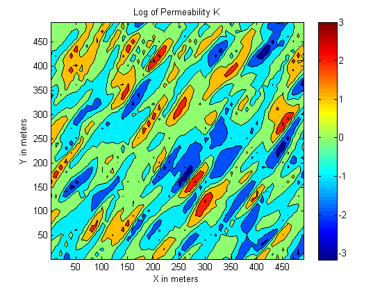

Contents
E7 - Lab 6 Solutions
close all;
clear;
clc;
Question 1
type BayAreaTeams
BayAreaTeams('Raiders', 'Niners');
BayAreaTeams('Athletics', 'Giants');
BayAreaTeams('Warriors', 'Sharks');
function [] = BayAreaTeams(varargin)
load('BayAreaSports.mat') %Load the data
%Store data into local variables
Athletics_Years = BayAreaSports.Athletics.Years;
Athletics_Games = BayAreaSports.Athletics.Games;
Athletics_Wins = BayAreaSports.Athletics.Wins;
Athletics_Win_Percentage = 100*(Athletics_Wins./Athletics_Games);
Giants_Years = BayAreaSports.Giants.Years;
Giants_Games = BayAreaSports.Giants.Games;
Giants_Wins = BayAreaSports.Giants.Wins;
Giants_Win_Percentage = 100*(Giants_Wins./Giants_Games);
Niners_Years = BayAreaSports.Niners.Years;
Niners_Wins = BayAreaSports.Niners.Wins;
Niners_Losses = BayAreaSports.Niners.Losses;
Niners_Win_Percentage = 100*(Niners_Wins./(Niners_Wins + Niners_Losses));
Raiders_Years = BayAreaSports.Raiders.Years;
Raiders_Wins = BayAreaSports.Raiders.Wins;
Raiders_Losses = BayAreaSports.Raiders.Losses;
Raiders_Win_Percentage = 100*(Raiders_Wins./(Raiders_Wins + Raiders_Losses));
Warriors_Years = BayAreaSports.Warriors.Years;
Warriors_Wins = BayAreaSports.Warriors.Wins;
Warriors_Losses = BayAreaSports.Warriors.Losses;
Warriors_Win_Percentage = 100*(Warriors_Wins./(Warriors_Wins + Warriors_Losses));
Sharks_Years = BayAreaSports.Sharks.Years;
Sharks_Games = BayAreaSports.Sharks.Games;
Sharks_Wins = BayAreaSports.Sharks.Wins;
Sharks_Win_Percentage = 100*(Sharks_Wins./Sharks_Games);
if numel(varargin) == 0 %If no teams are called
disp('Please enter at least one professional Bay Area sports team.')
return; %End the function
end
if numel(varargin) >= 1 %If at least one team is called
figure() %Create a figure
for i = 1:numel(varargin) %Loop through all inputs
if strcmpi(varargin{i},'Athletics') %If the Oakland Athletics are called
plot(Athletics_Years, Athletics_Win_Percentage, 'o-', 'Color',...
[.016 .290 .235], 'MarkerFaceColor', [.988, .729, .204],...
'MarkerEdgeColor', [.988, .729, .204], 'LineWidth', 2)
hold on;
grid on;
elseif strcmpi(varargin{i}, 'Giants') %If the San Francisco Giants are called
plot(Giants_Years, Giants_Win_Percentage, 'o-', 'Color',...
[0 0 0], 'MarkerFaceColor', [1 .302 0], 'MarkerEdgeColor',...
[1 .302 0], 'LineWidth', 2)
hold on;
grid on;
elseif strcmpi(varargin{i}, 'Niners') %If the San Francisco 49ers are called
plot(Niners_Years, Niners_Win_Percentage, 'o-', 'Color',...
[.784 0 .126], 'MarkerFaceColor', [.753 .6 .302],...
'MarkerEdgeColor', [.753 .6 .302], 'LineWidth', 2)
hold on;
grid on;
elseif strcmpi(varargin{i}, 'Raiders') %If the Oakland Raiders are called
plot(Raiders_Years, Raiders_Win_Percentage, 'o-', 'Color',...
[0 0 0], 'MarkerFaceColor', [.737 .769 .788],...
'MarkerEdgeColor', [.737 .769 .788], 'LineWidth', 2)
hold on;
grid on;
elseif strcmpi(varargin{i}, 'Warriors') %If the Golden State Warriors are called
plot(Warriors_Years, Warriors_Win_Percentage, 'o-', 'Color',...
[.004 .275 .678], 'MarkerFaceColor', [.973 .773 .212],...
'MarkerEdgeColor', [.973 .773 .212], 'LineWidth', 2)
hold on;
grid on;
elseif strcmpi(varargin{i}, 'Sharks') %If the San Jose Sharks are called
plot(Sharks_Years, Sharks_Win_Percentage, 'o-', 'Color',...
[.075 0 .028], 'MarkerFaceColor', [.004 .467 .541],...
'MarkerEdgeColor', [.004 .467 .541], 'LineWidth', 2)
hold on;
grid on;
else %If the input is not a valid name
disp('Please enter either ''Raiders'', ''Niners'', ''Warriors'', ''Giants'', ''Athletics'', or ''Sharks''.')
close; %Close the figure
return; %End the function
end
end
xlabel('Years', 'FontSize', 16); %Set x label
ylim([0 100]); %Define y axis for entire range of potential winning percentages
ylabel('Winning Percentage', 'FontSize', 16); %Set y label
title('Comparison of Major Bay Area Professional Sports Teams', 'FontSize', 20) %Add a title
legend(varargin, 'NorthEast'); %Add a legend
for i = 1:numel(varargin) %Plot championship data
if strcmpi(varargin{i},'Athletics') %If the Oakland Athletics are called
plot(Athletics_Champ_Years, Athletics_Champ_Percentages,...
'p', 'MarkerSize', 20, 'MarkerFaceColor', [1 .843 0],...
'MarkerEdgeColor', [1 .843 0])
elseif strcmpi(varargin{i}, 'Giants') %If the San Francisco Giants are called
plot(Giants_Champ_Years, Giants_Champ_Percentages,...
'p', 'MarkerSize', 20, 'MarkerFaceColor', [1 .843 0],...
'MarkerEdgeColor', [1 .843 0])
elseif strcmpi(varargin{i}, 'Niners') %If the San Francisco 49ers are called
plot(Niners_Champ_Years, Niners_Champ_Percentages,...
'p', 'MarkerSize', 20, 'MarkerFaceColor', [1 .843 0],...
'MarkerEdgeColor', [1 .843 0])
elseif strcmpi(varargin{i}, 'Raiders') %If the Oakland Raiders are called
plot(Raiders_Champ_Years, Raiders_Champ_Percentages,...
'p', 'MarkerSize', 20, 'MarkerFaceColor', [1 .843 0],...
'MarkerEdgeColor', [1 .843 0])
elseif strcmpi(varargin{i}, 'Warriors') %If the Golden State Warriors are called
plot(Warriors_Champ_Years, Warriors_Champ_Percentages,...
'p', 'MarkerSize', 20, 'MarkerFaceColor', [1 .843 0],...
'MarkerEdgeColor', [1 .843 0])
end
end
end
end
Warning: Ignoring extra legend entries.
Warning: Ignoring extra legend entries.
Warning: Ignoring extra legend entries.
  
Question 2
x = -5:.1:5;
y = -5:.1:5;
[X, Y] = meshgrid(x, y);
Z = -(Y.*cos(X))./exp((cos(X).^2) + (sin(Y).^2));
figure()
surf(X, Y, Z)
xlabel('X Axis', 'FontSize', 14)
ylabel('Y Axis', 'FontSize', 14)
zlabel('Z Axis', 'FontSize', 14)
title('E7 - HW 6 - Question 2', 'FontSize', 20)
x_slice = 0;
z_slice1 = -(y.*cos(x_slice))./exp((cos(x_slice).^2) + (sin(y).^2));
y_slice = .5;
z_slice2 = -(y_slice.*cos(x))./exp((cos(x).^2) + (sin(y_slice).^2));
figure()
subplot(1, 2, 1)
plot(y, z_slice1, 'k', 'LineWidth', 2)
grid on;
xlabel('Y Axis', 'FontSize', 14)
ylabel('Z Axis', 'FontSize', 14)
title('Slice at X = 0', 'FontSize', 20)
subplot(1, 2, 2)
plot(x, z_slice2, 'k', 'LineWidth', 2)
grid on;
xlabel('X Axis', 'FontSize', 14)
ylabel('Z Axis', 'FontSize', 14)
title('Slice at Y = .5', 'FontSize', 20)
 
Qestion 3
Perm = csvread('K.csv',1,1);
Vel_x = csvread('vx.csv',1,1);
Vel_y = csvread('vy.csv',1,1);
x = 1:10:500;
y = 1:10:500;
[X,Y] = meshgrid(x,y);
figure
hold on
contourf(X,Y,Perm)
quiver(X,Y,Vel_x,Vel_y,'r')
xlabel('X in meters');
ylabel('Y in meters');
title('Permeability K and Velocity Plot');
colorbar;
figure
contourf(X,Y,log(Perm))
xlabel('X in meters');
ylabel('Y in meters');
title('Log of Permeability K');
colorbar;
 